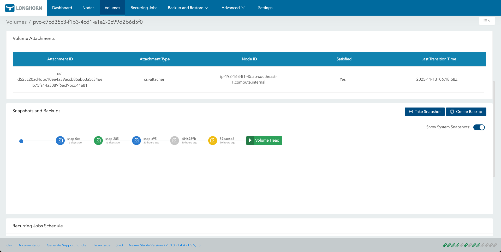

|
本文档采用自动化机器翻译技术翻译。 尽管我们力求提供准确的译文，但不对翻译内容的完整性、准确性或可靠性作出任何保证。 若出现任何内容不一致情况，请以原始 英文 版本为准，且原始英文版本为权威文本。 |
|
这是尚未发布的文档。 SUSE® Storage 1.12 (Dev). |
创建快照
快照是Kubernetes卷在任何给定时刻的状态。
通过SUSE Storage UI进行快照管理
要创建现有集群的快照，请按照以下步骤操作：
-
在SUSE Storage UI的顶部导航栏中，点击*卷*。
-
点击您想要创建快照的卷的名称。这将打开该卷的详细信息页面。
-
点击*创建快照*按钮。
一旦快照创建完成，您可以在卷的快照列表中查看它，位于卷头之前。
理解快照链可视化
在*卷详细信息*页面，*快照和备份*部分以链的形式显示快照历史。默认情况下，*显示系统快照*选项已启用，所有系统创建的快照都会出现在视图中。
链中的每个快照都有颜色编码，以指示其类型或状态。如果一个快照满足多个标准，可视化将使用优先级最高的颜色。
| 快照类型 | 颜色 | 说明 | 优先级（1 = 最高） |
|---|---|---|---|
错误 |
红色 |
指示快照创建失败或快照存在问题。 |
1 |
已去除 |
浅灰色 |
指示快照被标记为删除或已被删除。 |
2 |
系统创建 |
橙色/黄色 |
由 Longhorn 自动创建，通常用于重复作业或内部操作。 |
3 |
备份 |
环保 |
表示快照在配置的备份目标上存储了备份。 |
4 |
默认（用户创建） |
蓝色 |
用户手动发起的快照，通过 创建快照 操作进行。 |
5 |
下图显示了快照链可视化的示例：

使用自定义资源（CRs）进行快照管理
本节演示如何通过 kubectl 使用 自定义资源（CRs） 直接创建、列出、恢复和删除 Longhorn 快照SUSE Storage。
|
SUSE Storage 在 |
创建快照
-
准备清单 - 创建一个名为
longhorn-snapshot.yaml的文件，内容如下：apiVersion: longhorn.io/v1beta2 kind: Snapshot metadata: name: longhorn-test-snapshot namespace: longhorn-system spec: volume: pvc-840804d8-6f11-49fd-afae-54bc5be639de # replace with your actual Longhorn volume name createSnapshot: true -
应用清单：
kubectl apply -f longhorn-snapshot.yaml预期输出：
snapshot.longhorn.io/longhorn-test-snapshot created如果卷已分离，将出现关于引擎未运行的简短警告。SUSE Storage 会自动重试，当卷连接时快照完成。
数据引擎行为差异
当删除快照时，该快照是 卷头（当前活动状态）的直接父级，快照自定义资源（CR）的行为取决于所使用的数据引擎：
| 行为 | v1 数据引擎 | v2 数据引擎 |
|---|---|---|
CR 持久性 |
系统中的快照 CR 依然存在。 |
快照 CR 立即被去除。 |
状态字段 |
|
不适用，因为快照 CR 已被删除。 |
说明 |
v1 卷无法立即物理合并活动卷头的父卷。CR 继续跟踪快照数据，直到稍后的合并或清理操作。 |
v2 卷支持将父快照实时合并到卷头中，从而允许立即清理数据和元数据。 |
这种行为差异是预期的。在 v2 卷 中，快照 CR 的立即消失表明引擎已成功完成删除并合并数据。